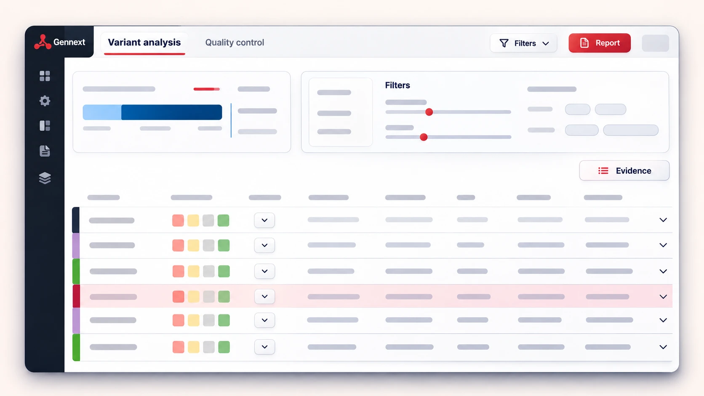
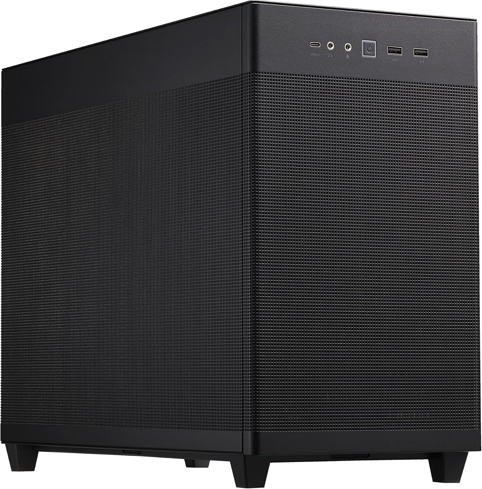

Yazılım
Analiz, yorumlama ve raporlama.
Yazılım ürünümüz Gennext, klinik genomik ve longevity için veri işleme, değerlendirme ve raporlamayı bir araya getirir.

- Gennext platformu
- Klinik genomik
- Longevity analizi ve raporlama

GENIVA
Sağlık verilerinin analizi, yorumlanması ve raporlanması için yazılım geliştiriyor, hesaplama altyapısı kuruyor ve eğitim veriyoruz.
Sağlık kurumları, laboratuvarlar ve araştırma ekipleri için.
NE SUNUYORUZ
Analiz için yazılım. Hesaplama için altyapı. Bilgiyi uygulamaya taşımak için eğitim.
Analiz, yorumlama ve raporlama.
Yazılım ürünümüz Gennext, klinik genomik ve longevity için veri işleme, değerlendirme ve raporlamayı bir araya getirir.

Hesaplama gücü, kurumunuzda.
Veri hacminize, analiz iş yükünüze ve mevcut ortamınıza göre yapılandırılan Worker Node ve sunucu altyapısı.


Analizin arkasındaki uzmanlığı geliştirin.
Sağlık ve araştırma ekiplerine yönelik genomik analiz, varyant yorumlama ve uygulamalı Gennext eğitimleri.

GENIVA’NIN YAZILIM ÜRÜNÜ
Klinik genomik ve longevity için geliştirdiğimiz yazılım platformu. Gennext, veri analizi, yorumlama ve raporlamayı otomatik iş akışlarıyla birleştirir.
UYGULAMA ALANLARI
CLINICAL GENOMICS
Klinik ve araştırma uygulamalarında short-read ve long-read iş akışlarıyla somatik ve germline analiz.
Klinik genomiği inceleyinLONGEVITY
Laboratuvarımız ve multiomik yaklaşımımızla desteklenen, Gennext üzerinden genetik ve epigenetik değerlendirme.
Longevity çözümlerini inceleyinREFERANSLAR VE ARAŞTIRMA
Klinik genomik ve longevity referanslarımızı, Gennext’in kullanıldığı bilimsel çalışmaları inceleyin.
Yazılım, altyapı veya eğitim ihtiyacınızı e-postayla paylaşın. Telefon numaranızı ekleyin, sizi arayalım.